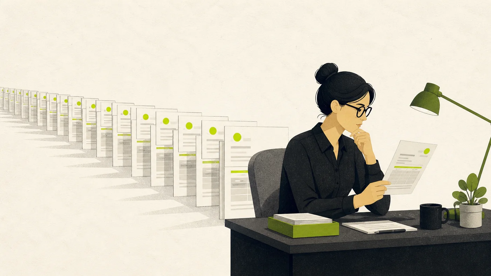
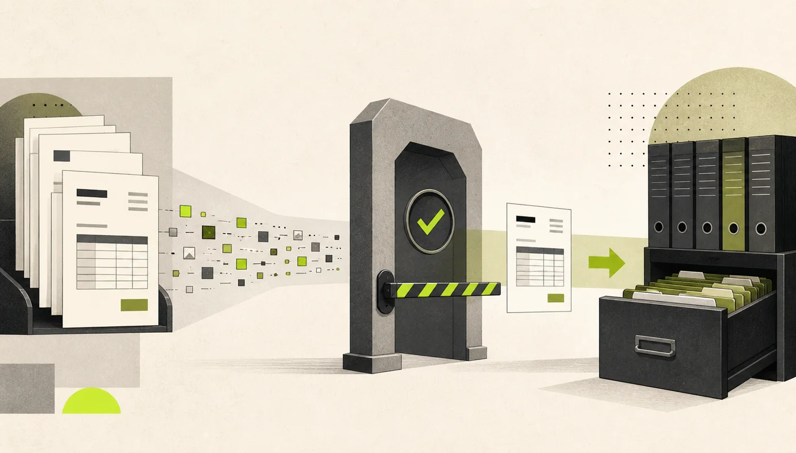

Field note / Human review
Human review stops working when everything needs review.
Every review consumes a person's attention. The software has to know which actions deserve it.
Give people the cases where their judgment can still change the outcome. Let the customer choose the review rules, explain why each action stopped, and track both the mistakes that slipped through and the safe work that got delayed.
While building SyncABill, I kept coming back to one question: which invoices should the software stop for a person?
Stop every invoice and the customer gets another inbox to clear. Stop none and a bad total can become a real bill in QuickBooks or Xero.

The customer should own the rule
Start with the obvious problem: the same rule will not work for every company.
A $10,000 invoice may be ordinary for one business and alarming for another. One controller may want to inspect every invoice from a new vendor. Another may care most about a total that does not match the line items.
SyncABill lets the account controller choose the rules that require review. An amount threshold is one example. The product does not impose a universal $10,000 limit.
That choice belongs close to the work. The controller knows which vendors are normal, which amounts matter, and which mistakes would be painful. The software should apply that policy consistently.
A person needs a reason for the interruption
Now imagine the invoice does stop. A message that says “Please review this invoice” has pushed the hard work back onto the person.
The reviewer should know why the invoice stopped. They should see the original document, the extracted fields, and the check that failed. They need enough information to approve it, correct it, or reject it without starting the investigation from scratch.
- Say why it stopped. The total crossed your $10,000 review rule.
- Show what already passed. The vendor matched and the invoice math checked out.
- Make the next action clear. Approve it, correct it, or reject it.
The exact message can be simple: the amount crossed your limit, the invoice math did not add up, the selected account was missing, or the file appears to be a duplicate. The reviewer should never have to guess why the system asked for help.
The model does not approve its own work
The document model proposes the vendor, dates, totals, line items, and account. Application code checks those values, applies the controller's rules, and controls the accounting write.
The model can produce useful data. It never receives permission to move money or change a ledger.
The same rule applies outside accounting. An agent may draft an email without sending it. It may prepare a refund without issuing it. It may suggest a permission change without granting access.
Each product needs a clear line between preparing an action and taking it.

A review button proves very little
It is easy to say that a person remains “in the loop.” I find that phrase too vague to be useful on its own. I want five concrete answers.
- Which actions stop?
- Why did they stop?
- What can the reviewer change?
- Can the action still be prevented?
- What happens after rejection?
If the reviewer cannot understand the decision or stop it in time, their presence is mostly decorative. If they receive every routine case, fatigue will eventually weaken the control.
SyncABill currently keeps accounting sync manual in production. Before enabling unattended sync broadly, I would want the automatic path to use the same locks, duplicate checks, and provider safeguards as the manual path. The approval policy also needs evidence from real corrections and misses.
Watch what escapes and what gets stuck
A dangerous action can slip through when it should have stopped. A safe action can also waste a person's time in review.
Those mistakes have different costs. A duplicate bill can be much worse than an unnecessary review. The policy should reflect that difference, then change as the team sees real failures.
Useful measures include:
- Incorrect actions that escaped review.
- Safe actions that were stopped.
- Fields people changed before approval.
- Time spent waiting for review.
- Actions reversed after approval.
Human attention should go where judgment can still change the result.
The lesson I kept
Adding an approval step is easy. Designing a good interruption is harder. The system has to stop the right work, explain itself clearly, and leave the person enough time to change the result.
Ask that early. It forces the team to name the risk, respect the reviewer's time, and decide exactly where the software's authority ends.